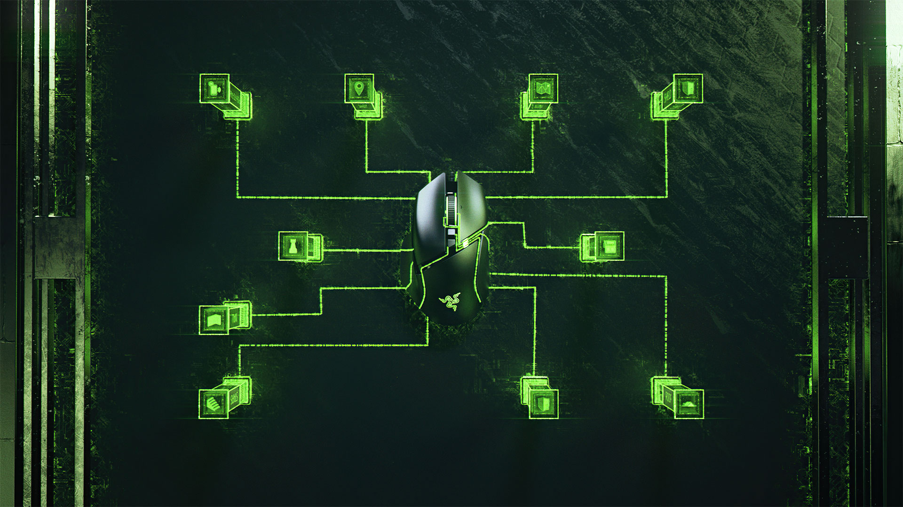

RAZER BASILISK V3
US$69.99

RAZER BASILISK V3
FULL SPECTRUM CUSTOMIZABILITY
Create, control, and champion your playstyle with the new Razer Basilisk V3—the quintessential ergonomic gaming mouse for customized performance.
With 10+1 programmable buttons, an intelligent scroll wheel, and a heavy dose of Razer Chroma™ RGB, it's time to light up the competition your way.
PLAY IT YOUR WAY. LIKE NEVER BEFORE.
10+1 PROGRAMMABLE BUTTONS
Assign all your macros and secondary functions across 11 easy-access buttons—including its acclaimed multi-function trigger—to execute essential actions like push-to-talk, ping, and more.
